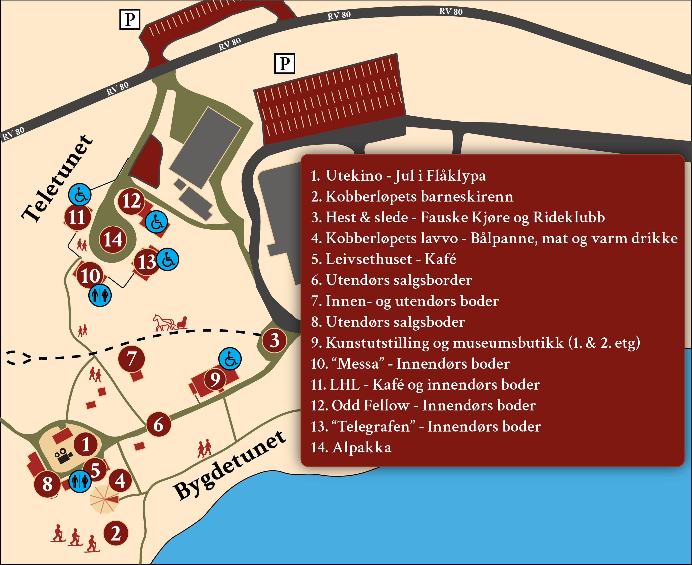

Illustrasjonsbilde / AI-generert

13. - 14. desember 2025 · Fauske bygdetun & Teletunet
Alle som ønsker å stille under Jul på Tunet må bruke skjemaet over. Påmeldingsfristen er 15. november.
Påmeldingen er bindende. Interessenter som har meldt seg på før 6. nov blir kontaktet for å få bekreftet påmeldingen.